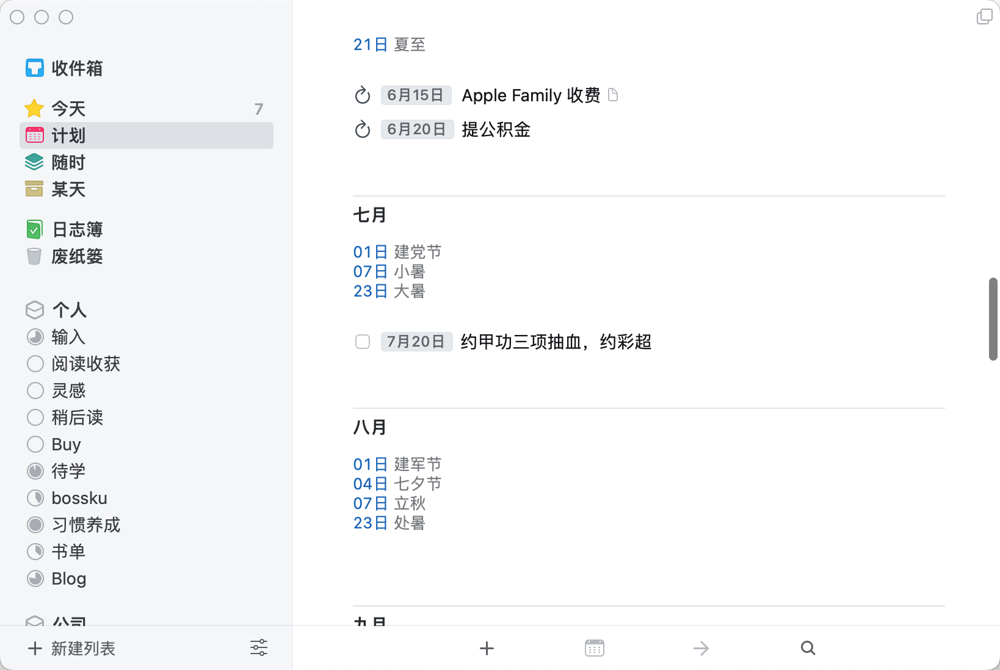

今天是端午节，祝各位端午安康。
做靠谱的人
作为一名员工，在职场中非常重要的一个品质就是要稳定输出，这很像我们监控指标中经见的 P99。
比如说有这样两个视频 App，一个 App 在打开视频的时候，有 99.99% 的概率会最多缓冲 3s，后面就会顺畅播放视频。另一个 App 有 80% 的概率视频一秒不卡，还有 20% 的概率每一帧都卡，卡到忧伤。如果只能选一个 App，你会选择哪个 App？我想大部分没有自虐倾向的人都会选择第一个。
只有长时间稳定输出，老板才放心让我们承担更多、更大的职责，同事们也更愿意和稳定靠谱的同事合作「不求有惊喜，但求无惊吓」。
说到这里，通过最近发生在自己身上的一件事，获得的感想是，任何寻常的跨部门合作都要认真对待，说不定日会有意想不到的结果。
Things3
我可以很自信的说，我绝对是一个靠谱、输出稳定的打工人，而我能做到这一点，除了一些习惯外，给我提供最大帮助的是一款叫 Things3 的任务管理工具。我现在差不多每天的工作事项都是靠 Things3 驱动，说的通俗点是靠 Todo 驱动，这有点像我们常说的 deadline 是第一生产力。
「君子生非异也，善假於物也。」
下文提到的 Things 皆为 Things3，为了简化称呼我将去掉 3 这个数字。
我用过很多 Todo 类的工具，比如嘀嗒清单、微软的 Todo，Sorted，最终还是留在了 Things，它的界面、交互、易用性吸引了我。
使用 Things 的好处是我能在每天一早就知道今天有哪些重点工作，一天中想到任何要做的事情都可以记录下来，领导安排的临时工作或者向其他人承诺的事项也可以记录下来，好记性不如烂笔头，人脑不适合存储这种临时的、用完就可以扔的记忆。
我使用 Things 有 4、5 年了，下面就来介绍下我是如何使用这款工具的。这里我不介绍 GTD 的方法论，只说我的实践。也不会面面俱到介绍 Things 的各种细节，你下载个 Things 跟着首次使用的入门教程走一遍就明白了。
以下我通过 Things 的 Mac 版本来做演示，手机上的功能完全相同，不管是哪一端体验都非常棒，我自己双端都有在高频使用，路上使用手机端、工作时使用 Mac 端，同时还在手机桌面和 Apple Watch 表盘上放了 Things 的小组件，可以在不打开 App 的时候就看到待办事项。
另外补充下，Things 的三端（Mac、iOS、iPad）都是要独立收费，手机上的价格还好，但 Mac 上的价格有些感人。
时间目录
Things 根据事项要完成的时间分了这些目录：
- 收件箱，临时存放或不用分类的琐碎事项；
- 今天，时间聚焦到今天；
- 计划，也可以理解成日程安排，有具体时间点的事项。
- 随时，随时可抽时间完成的事项以及本周临近截至时间（Deadline）需要优先考虑的事项；
- 某天，选择了「某天」时间标签的事项，可以用来归集不需要时间点约束的未来待办事项；
- 日志簿（完成事项的历史记录）。
我自己使用的时候只会用到「今天」、「计划」、「日志簿」，其他的几乎不用。
新建任务到「今日」
我个人的习惯是，所有新建的任务不管分类、不管是不是一定要今天做，一律先放入「今天」，按照 GTD 的理论应该是先放收件箱。我前边提到，我是靠 Todo 驱动，也就是每天都要把今天的任务消灭掉。这里的消灭可以不必是完成，而是把任务安排到其他更合适的时间或者拆解成更小粒度的任务打散到多天完成。
举个例子，比如今天周一我接了一个需求，排期要周五上线，我可能因为其他事正在赶工，先在 Things 的「今天」里加上一条「周五上线 xxx 功能」。之后在我不忙的时候，再次打开 Things 就会看到我刚才记录的那件事情，这时候可以根据我的经验将这个任务拆成若干小任务，并安排到后边的时间里，比如：「完成 A 模块开发」并把它安排到周二（可以在「计划」中找到），「完成 B 模块开发」并把它安排到周三，「完成功能测试」并把它安排到周四，「xx 功能上线」并安排到周五。这样后边每一天我都有这个项目的合理进度安排，同时做每一项的时候你都可以给未来的自己留言，比如我周二周三开发完模块 AB，对应的 merge request 可以记录在周五的上线那个事项里，开发过程中修改的配置也可以记录下来，避免上线时忘记。
下边是一个我前段时间上线功能的截图，：
里边的 mr 地址和配置项都是在前期开发过程中记下来的，到了上线那天完全不用担心漏掉什么，也不用现去翻找我们的 mr 给其他同事 review。
用好循环事件
我们工作和生活中一定有很多枯燥、例行的事项要去完成，如果每个我们都靠脑子记肯定是记不过来的，这种情况下我们可以使用循环事件。
如下图所示：在「计划」中，事件前边带有一个循环小圆圈标记的就是循环事件，最近我们在家办公，上午下午需要使用钉钉打卡，所以我建了两个循环打卡事件，同时给每个设置了提醒时间，设置提醒时间的事项后边会带有一个小铃铛。
上边图中国年还可以看到，我有一个叫「日课」的循环项，后边有三条圆点线，表示这个事项中包含有子事项，也就是我给自己约定的每天要做的事情：
这里边的子事项我会根据近期的工作学习的测重点来进行调整，比如最近我的工作方向要偏重于信息检索相关，所以我加了一项读信息检索导论这本书。
我之所以没有把这几项作为独立的事项列出来，是因为不想有「红点焦虑」，前边提到我每天是靠 Todo 驱动，当看到有这么多待办项没有做时，会很焦虑，会出现为了消事项而匆忙赶工的情况。把这几项收在一个里边，也表示这几项有一定的宽容度，如果今天时间太紧张，可以只选其中的 1、2 个子项完成就行。
我把「多邻国学习」放到了外边而没有收入「日课」中，是因为我把这一项作为了一个必选项而不是可选项，我希望学英语这件事情不要中断。
提醒未来的自己
下边图中的「Apple Family 收费」和「提公积金」也是我的循环事件，循环时间不进支持每日，还支持每几日、每周几、每月几号等等。
比如「Apple Family 收费」我设置的是每 3 个月的 15 号提醒，我还记录了每人应收的钱，都需要找谁要钱，如果没有 Things 的帮助我肯定是记不住的。「提公积金」那项我设置了每月 20 号提醒。
在这张图里还能看到，我在 7 月 20 日安排了一个一次性事件，如果你在很久后有什么事情要做，一定记得要记录下来，并放入「计划」，我个人习惯是将这种很久后的事项放置在提前两三天，提前看到能给我一个预期，留个缓冲时间，毕竟很久后还需要做的事一般都不是什么小事。


因为每周三需要和组内的同事一起开周会，这之前需要写好周报，会后我需要合大家的周报，所以我给「提交周报、合周报」也建了一个每周三的循环事件，同时在里边把每个人周报的地址进行了记录：
回顾过往
职场中我们不免要写周报、月报、年度总结等等，如果自己平时有记录的习惯那还好，如果没有，到写总结的时候一定是大脑空白，仿佛自己失忆了，忘记了自己这段时间忙忙活活干了点啥。
如果我们用 Things 将工作事项管理起来，在需要的时候通过「日志簿」来回顾就会很方便。比如现在你问我在一月份做了些什么，我只需要翻到一月份部分，看下我当时的记录知道了。
这些内容有些描述过于简单，其他人也许看不懂，但因为每件事情都是我亲自做的，我看下提示就能明白这说的是什么事，由此可见我们并不需要为每个事项做特别详细的说明，能让自己能看明白就够了。人脑存储能力很强，检索能力很弱，需要借助些外力来补足检索能力。
管理我的一切
不止待办事项，实际上我用 Things 管理了我的方方面面。
- 待学、待读、待听、待看、待买
- 想去的地方
- 突发奇想的点子
- 想写的博客内容
- 阅读收获的金句
- 项目中的可优化项
- 交代给其他人的任务
- 想要尝试的行动
- ……
Things 支持将事项进行分类管理，上边那些事项我没有计划做的时间点，有些只是为了保存起来，这时候我们可以不设置时间，将它收在我们对应的分类中就可以了。
这里借助的是 Things 提供的创建区域和在区域中创建项目的能力。实际上 Things 的这个功能是用来做更大一些的目标管理的，不过我个人将它作为了一个分类功能来使用。
比如，我给自己分了个人和公司两大区域，每个区域中建了一些属于这个区域的分类（也就是项目）：
把所有事情都记录下来还有个好处是，在我无所事事时可以看下这些事项中哪个是我现在有心情可以做的，或者读完一本书后下一本要读什么。
有待完善的地方
由于我会有「红点焦虑」的情况，所以想要一个在某个时间点后再出现事项的功能，有些事必须过了某个时间点才能去做。不过我觉得 Things 没有支持这个功能也有它的考虑，「今天」就应该把计划在今天做的事情都列出来，让我们可以提前规划。
Things 提供了一个退而求其次的方案，将晚上做的事情通过分割线放到下方，在事项上点击右键就可以操作或者使用快捷键 Command + E。
配合日历订阅使用
我们再看一眼上边那张图，在「今天」下方显示今日天气状况和今天的节日，这是我在系统的日历中订阅了两个事件，Things 可以将系统日历中的事件列在我们自己事项的上边，就可以实现这样的效果。
中国节假日事件：
北京天气事件：
天气事件大家可以根据自己所在城市，在这个网站生成订阅链接。
最后
Things 还有一些功能我自己也没有深入探索过，比如标签、截止日期，大家可以自行探索。
通过这篇文章我梳理了一下自己使用 Things 的习惯，如果大家觉得可行、适用，可以尝试将自己的事项管理起来，做一个「靠谱」的人。
如果你发现文章中有观点介绍有误或者不明确的地方欢迎留言讨论。